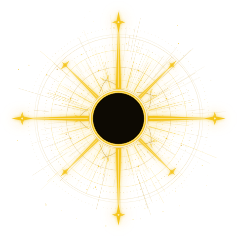
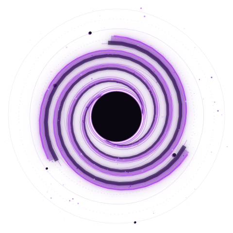
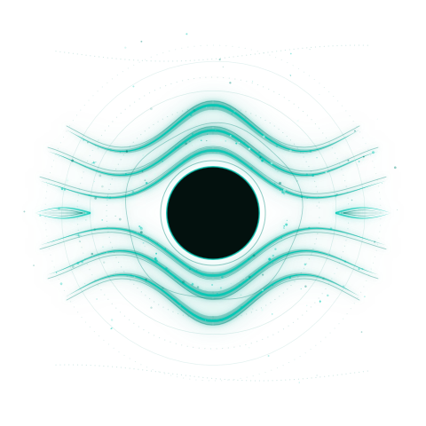
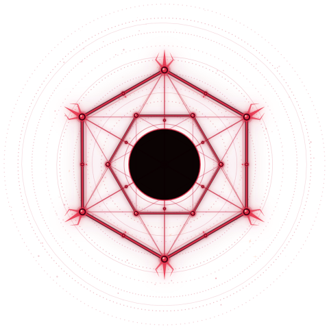
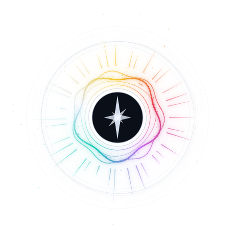

Archmage · Ascension
Draw magical components from the depleting Source and arrange them into spells in your Spellbook. When the Drought ends, the wizard with the most refined Spellbook ascends.





At the Table
Three layers, one game: the board holds the shared state, your phone answers mid-turn questions, and the full rules settle everything else.
The Board
On the table · everyone at onceThe shared anchor — Set-up, Normal Turn, Drought Turn, the Array, Recognition Points, and Key Reminders, always in view.
A3 PRINT FILE →Quick Reference Card
On your phone · mid-turnOne question at a time: can I cast this? What does it do? What can I do in Learning? Includes a hand checker that spots every spell you can form.
OPEN ON YOUR PHONE →Online Rules
First game · settling disputesThe full reference — every rule in depth, in the board's own order, plus the score calculator and the Ascension Trials variant.
OPEN →Tools
Trials · Multiplayer
End of game · advanced variantThe Ascension Trials companion — power domains, secret allocation, and winner determination, calculated at the table.
OPEN →Spellbook Optimizer
Analysis · after the gameEnter a final hand and find the partition that maximises Recognition Points — plus runner-up configurations.
OPEN →